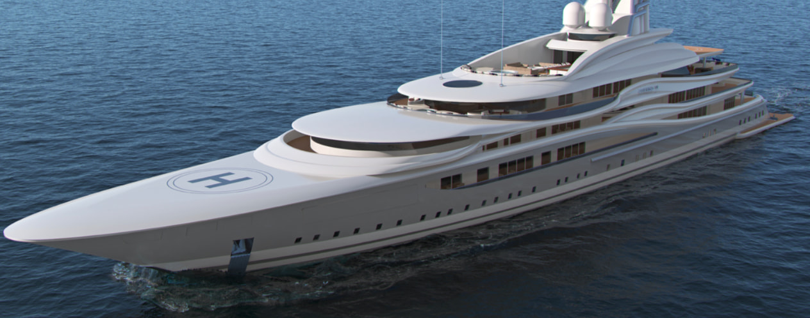

VIP Яхта № 1
В этой суперъяхте сочетаются современный дизайн и инновационные технические разработки. Project Odin — это уникальная возможность построить единственную в своем роде суперъяхту с огромной валовой вместимостью, привлекательным бюджетом и в оптимальные сроки. Эта поразительная, привлекающая внимание яхта — воплощение концепции удостоенного наградами дизайнера Diana Scott и фирмы Naval Architect McFarlane Ship-design, с интерьером от H2 Yacht Design. Это судно является одной из нескольких моделей из новой серии Kriger Project, которые строят в диапазоне длины от 90 до 150 метров, это более чем солидная яхта — по стилю, сути, валовой вместимости и многочисленным удобствам. На ней могут разместиться 13 — 36 гостей, она обладает огромным потенциалом как роскошная яхта, сдаваемая в аренду, так и яхта исключительно для личного пользования. У Project Odin исключительная дальность плавания в 8000 морских миль.
Цена: €220,000,000
Характеристики товара
| ДЛИНА: 360’11"/110м | ШИРИНА: 65’8"/20м | ТОНАЖ: 6,700 GT | ГОД ПОСТРОЙКИ: 2021 | МАКСИМАЛЬНАЯ СКОРОСТЬ: 21 узел |
| КРУИЗНАЯ СКОРОСТЬ: 17 узлов | КОЛИЧЕСТВО ГОСТЕЙ: 35 | КАЮТ: 18 | ЭКИПАЖ: 45 | КОРПУС: сталь |
| НАДСТРОЙКА: алюминий | ТЕСТОВАЯ ИНФОРМАЦИЯ: тест | ТЕСТОВАЯ ИНФОРМАЦИЯ: тест | ТЕСТОВАЯ ИНФОРМАЦИЯ: тест | ТЕСТОВАЯ ИНФОРМАЦИЯ: тест |
| ТЕСТОВАЯ ИНФОРМАЦИЯ: тест | ТЕСТОВАЯ ИНФОРМАЦИЯ: тест | |||
Многочисленные удобства на борту
Project Odin характеризуется огромным количеством бортовых пространств, каждое из которых имеет собственное назначение и отличается от других, в том числе несколько жилых помещений, обеденные зоны для официальных и неофициальных мероприятий, спортивные залы и просторный кинотеатр. Основной особенностью конструкции являются складывающиеся балконы (при желании) во всех жилых зонах яхты и зонах размещения, что позволяет гостям почувствовать, что они действительно находятся на воде. Широкие открывающиеся двери надстройки также пропускают свет, гарантируя наполненность яхты естественным светом, и гости чувствуют себя в прекрасном окружении. Владельцы будут наслаждаться обширными пространствами, выделенными специально для них, в том числе огромной мастер-каютой, спа-салоном, тренажерным залом и потайной лестницей, ведущей непосредственно к мостику через личный кабинет и библиотеку. На борту находится 17 дополнительных кают, все гостевые каюты элегантно оформлены с обычным для H2 Yacht Design совершенством. Любители оздоровительных процедур будут наслаждаться предложениями роскошного спа-салона на борту, оборудованного хаммамом, комнатами с искусственным холодом и снегом, фонтанами, финскими саунами, релаксационными зонами для полного расслабления, массажными кабинетами, салонами красоты, и несколькими различными комнатами для физических упражнений в помещении и на открытом воздухе. Большой панорамный бассейн расположен на главной кормовой палубе вместе с джакузи и местами для принятия солнечных ванн на нескольких палубах. На Project Odin основное внимание направлено на релаксацию со всеми многочисленными функциональными особенностями, сочетающими в себе все для того, чтобы гости чувствовали себя полностью расслабленными с того момента, как они поднялись на борт.
Отличные мориходные качества
У Project Odin исключительная дальность плавания в 8000 морских миль, она открывает мир для роскошных путешествий, куда бы ни пожелали отправиться новые владельцы. Эта огромная дальность плавания позволяет яхте быть самодостаточной и плавать в отдаленных регионах, а вертолетная площадка обеспечивает дополнительную возможность прибытия и отправления для гостей. Яхта оснащена двумя дизельными двигателями, крейсерская скорость — 17 узлов, может достигать скорости до 21 узла и имеет классификацию Lloyds 100 A1 PYC UMS, SCM PAC1. Огромный гараж можно заполнить всякими надувными лодками, водными игрушками и плавучими средствами, которые только можно себе представить.